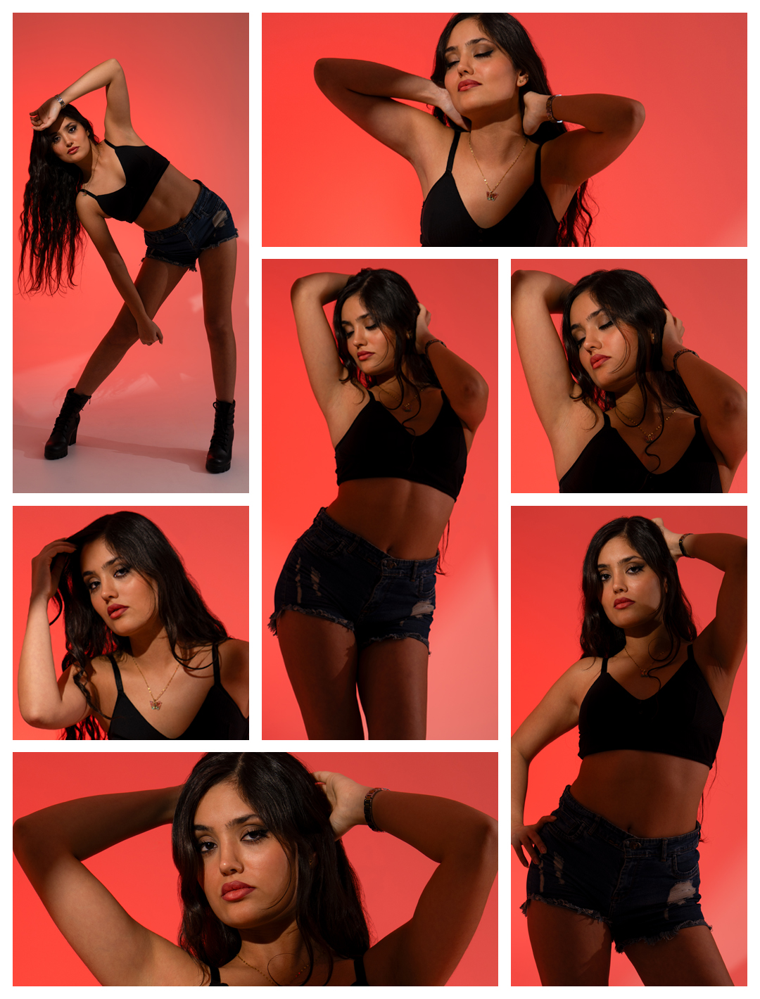

desire rarely arrives loudly
A study of restrained sensuality and quiet confidence.
Set against a crimson glow, Quiet Desire explores the delicate tension between vulnerability and control — where emotion exists not in spectacle, but in presence. Through minimal styling, fluid movement, and cinematic warmth, the series captures the way desire often reveals itself quietly, through gesture, atmosphere, and stillness.

Image 01
Image 02
Image 03
| Photography | Matin Mortazavi |
| Lighting Designer | Ahmad Shalbaf |
| Model | Sharbanoo |
| Category | Editorial Fashion |
| Year | 2026 |